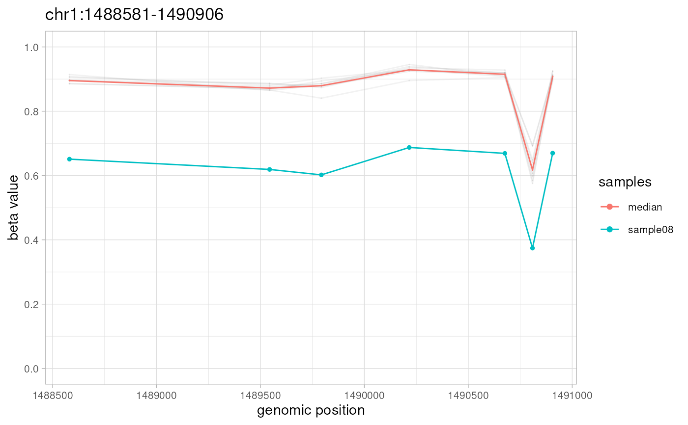

[OBSOLETE] Template-based simulation of methylation data sets
Source:R/simulateData.obsolete.R
simulateData.obsolete.RdThis function is fully functional but obsolete. It will remain a part of the
package for consistency, as it was used in `ramr` publication
(doi:10.1093/bioinformatics/btab586
). Please use faster and more capable
simulateData instead.
`simulateData.obsolete` generates aberration-free methylation data using an experimental data set as a template, and further introduces methylation aberrations if `GRanges` object containing a set of aberrantly methylated regions was provided. The output can be used to evaluate performance of algorithms for search of differentially (DMR) or aberrantly (AMR) methylated regions.
Usage
simulateData.obsolete(
template.ranges,
nsamples,
amr.ranges = NULL,
sample.names = NULL,
min.beta = 0.001,
max.beta = 0.999,
cores = max(1, parallel::detectCores() - 1),
verbose = TRUE
)Arguments
- template.ranges
A `GRanges` object with genomic locations and corresponding beta values included as metadata (same object must be supplied to this and to the `simulateAMR` functions).
- nsamples
A single integer >= 1 indicating the number of samples to generate.
- amr.ranges
A `GRanges` object with genomic locations of (rare) methylation aberrations. If `NULL` (the default), no aberrations is introduced, and function will return "smoothed" data set. If supplied, `GRanges` object must contain the following metadata columns:
`revmap` – integer list of `template.ranges` genomic locations that are included in this AMR region
`sample` – an identifier of a sample to which corresponding AMR belongs. Must be among the supplied or auto generated `sample.names`
`dbeta` – absolute deviation to be introduced. Must be numeric within the range c(0,1) or NA. When NA - the resulting beta value for the corresponding genomic position will also be NA
Such an object can be obtained using
simulateAMRmethod or manually.- sample.names
A character vector with sample names. If `NULL` (the default), sample names will be computed as `paste0("sample", seq_len(nsamples))`. When specified, the length of the `sample.names` vector must be equal to the value of `nsamples`.
- min.beta
A single numeric within the range c(0,1). All beta values in the generated data set below this value will be assigned this value. The default: 0.001.
- max.beta
A single numeric within the range c(0,1). All beta values in the generated data set above this value will be assigned this value. The default: 0.999.
- cores
A single integer >= 1. Number of processes for parallel computation (the default: all but one cores). Results of parallel processing are fully reproducible when the same seed is used (thanks to doRNG).
- verbose
boolean to report progress and timings (default: TRUE).
Value
The output is a `GRanges` object with genomic ranges that are equal to the genomic ranges of the provided template and metadata columns containing generated methylation beta values for `nsamples` samples. If `amr.ranges` object was supplied, then randomly generated beta values will be modified accordingly.
Details
For every genomic location in the template data set (`GRanges` object with genomic locations and corresponding beta values included as metadata) `simulateData.obsolete` estimates the parameters of beta distribution by means of `EnvStats::ebeta` function, and then uses estimated parameters to generate `nsamples` random beta values by means of `stats::rbeta` function. This results in "smoothed" data set that has biologically relevant distribution of beta values at every genomic location, but does not contain methylation aberrations. If the `amr.ranges` parameter points to a `GRanges` object with aberrations, every AMR is then introduced into the "smoothed" data set as following: if mean methylation beta value for AMR region across all samples in the "smoothed" data set is above (below) 0.5 then all beta values for the sample defined by the `sample` metadata column are decreased (increased) by the absolute value specified in the `dbeta` metadata column. Resulting data sets with (or without) AMR together with the `amr.ranges` set of true positive aberrations can be used as test data set to evaluate performance of algorithms for search of differentially (DMR) or aberrantly (AMR) methylated regions.
See also
simulateAMR for the generation of random methylation
aberrations, getAMR for identification of AMRs,
plotAMR for plotting AMRs, getUniverse
for info on enrichment analysis, and `ramr` vignettes for the description of
usage and sample data.
Examples
data(ramr)
amrs <-
simulateAMR(ramr.data, nsamples=10, regions.per.sample=3,
samples.per.region=1, min.cpgs=5, merge.window=1000)
noise <-
simulateAMR(ramr.data, nsamples=10, regions.per.sample=20,
exclude.ranges=amrs, min.cpgs=1, max.cpgs=1, merge.window=1)
noisy.data <-
simulateData.obsolete(ramr.data, nsamples=10, amr.ranges=c(amrs,noise),
cores=2)
#> Simulating data
#> [0.707s]
#> Introducing epimutations
#> [0.019s]
plotAMR(noisy.data, amr.ranges=amrs[1])
#> Plotting 1 genomic ranges
#> 100%
#> [0.092s]
#> $`chr1:843491-846742`

#>